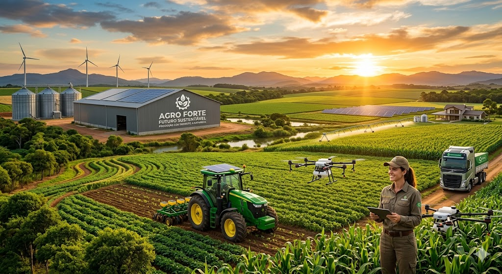

A força que alimenta o presente com o respeito que garante o amanhã. Conectando tecnologia, preservação e produtividade.

Cultivamos valores que transformam a produção agrícola e protegem o meio ambiente.
"Agro sustentável: a força que alimenta o presente com o respeito que garante o amanhã."
"A produtividade do futuro é verde: alta tecnologia aliada ao respeito ambiental."
"Alimentando o mundo, protegendo o planeta. Esse é o verdadeiro compromisso do campo."
A sustentabilidade no campo não é apenas um conceito, é métrica e eficiência. Unindo tecnologia de ponta e manejo consciente, provamos que é possível aumentar a produtividade e, ao mesmo tempo, regenerar os ecossistemas ao nosso redor.
Com irrigação inteligente por gotejamento.
Matriz baseada em painéis solares e eólica.
Otimização de lavoura através de drones e IA.
Preservação rigorosa de áreas nativas e APPs.
As ferramentas que transformam a teoria em realidade no campo.
Drones e satélites identificam a saúde exata do solo e das plantas, evitando desperdício de insumos.
Galpões e usinas solares integradas geram toda a eletricidade necessária para a operação agrícola.
Práticas biológicas de manejo que enriquecem o solo naturalmente, reduzindo a necessidade de químicos.